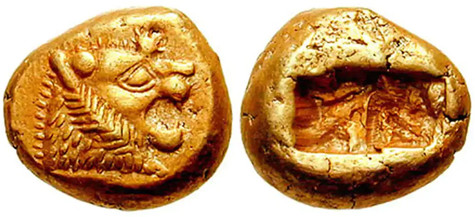
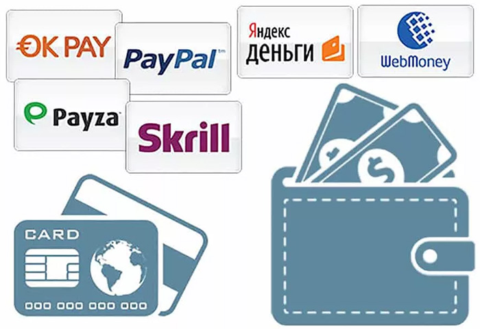

История денег от бумажных банкнот сквозь металлическую монету к операциям с электронными валютами
Появление монет
Наверное, не так уж много найдётся людей на земном шаре, которые признались бы, что не представляют, как выглядит стодолларовая банкнота. Американскую валюту и её самый крупный номинал растиражировали культовые фильмы и настенные граффити. Она мелькает в аналитических обзорах и экономических новостях. Выписывая перспективы обменного курса, чаще всего статью иллюстрируют не банкнотой номиналом 1 доллар, а именно «соткой».

Появление банкнот
Первые бумажные деньги частным порядком применили в Китае ещё в VIII веке. Появление государственных денег на бумаге их в различных источниках датируется то 812, то 910 годом, так как ранние выпуски династии Тан до наших дней не дошли, а историки исследуют лишь последующие эмиссии. Причиной возникновения бумажных денег стала тревога купцов, опасавшихся перевозить большие суммы монетами. Удобство замены связок монет единственным заверенным листом оценили и частные лица, и государство. Однако неконтролируемая императорская эмиссия подорвала доверие к бумаге и вывела её из обращения. Вернулись бумажные деньги только при династии Сун, в период правления которой хождение денежной единицы «цзяо-цзы» утвердили Указом 1023 года. В это время наблюдался подъём экономики, и требовалось перемещение огромного количества денег по различным районам страны. Купцы, легко обменивающие монеты на бумагу и обратно, после появления бумажных денег называли их «летающими» или «летучими». В качестве преобладающего средства обращения деньги из бумаги утвердились при династии Юань.

Электронные деньги
Следующим шагом эволюции средств расчёта стали электронные деньги, которые не надо путать с безналичными платежами. Скорее, они ближе к наличным деньгам, так как безналичные платежи привязаны к определённой личности, которую легко идентифицировать, а электронные деньги хранятся в электронном кошельке, которым может пользоваться любой, имеющий к нему доступ. Фиатные электронные деньги на базе сетей – это та же PayPal, с помощью которой расплачиваются на аукционах типа eBay. Из российских частных электронных платёжных сетей можно назвать QIWI, Яндекс.Деньги, RBK Money и WebMoney. Евросоюз определяет три принципа, которым должны соответствовать электронные деньги.
